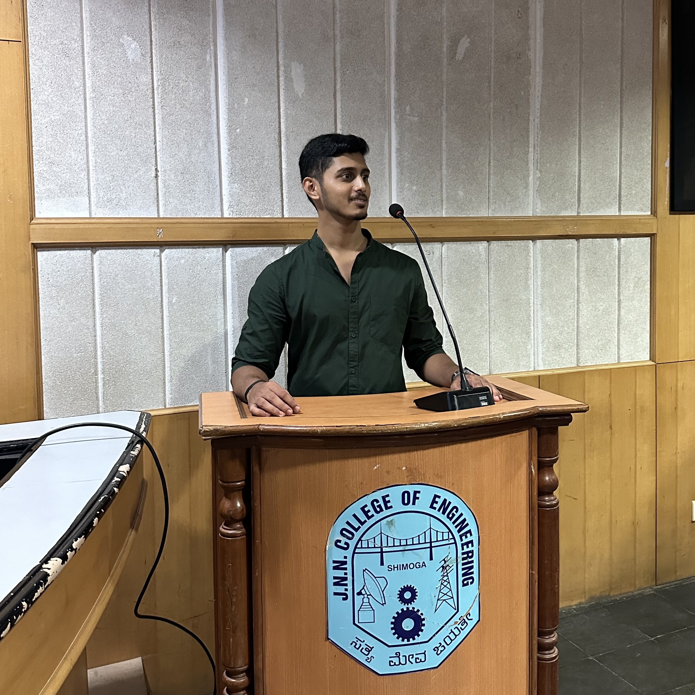

University of California San Diego
Sep 2025 – Jun 2027Halıcıoğlu Data Science Institute
Master of Science in Data Science
shashank@257:~$ whoami
Data Scientist · AI / ML Engineer · MS Data Science @ UCSD · GenAI & LLMs
Architecting production-grade, end-to-end AI systems at the intersection of generative AI, deep learning, and trustworthy ML. From LLM-powered RAG pipelines and transformer architectures to adversarially-robust models — transforming state-of-the-art research into scalable, real-world impact. 4× published AI researcher, community builder, and founder.
Halıcıoğlu Data Science Institute
Master of Science in Data Science
Jawaharlal Nehru New College of Engineering
Bachelor of Engineering in Computer Science & Engineering
Architected end-to-end ML pipelines — large-scale data processing, cleaning, EDA, feature engineering & NLP across 100k+ records — and deployed production-grade predictive & time-series forecasting models achieving a 0.98 F1 score. (Digitide, formerly Conneqt Digital.)
Led product development & workflow design for an AgriTech e-commerce platform, collaborating with startups to tackle supply-chain challenges and ship technology-driven, data-informed solutions.
Engineered data-driven features and real-time analytics for WaitKyu, a queue-management platform with 2000+ active users — leveraging ML-powered insights to optimize UX and drive product decisions.
Built and maintained production full-stack web applications end-to-end under the guidance of the EdVedha team.
Built robust backend systems in Python & Java and mentored junior engineers across the team.

Founded and scaled a technology & entrepreneurship club empowering thousands of students from tier-2/3 cities with real-industry exposure and a thriving startup ecosystem; now serving as mentor to junior teams.
Led events, national conferences, city chapters & hackathons — championing open-source software across the nation.
Rose from volunteer to national community lead for Parrot Security OS — driving operations, contributions & user engagement.
Co-founded a cybersecurity community, scaling a 10,000+ user platform worldwide advancing ethical pen-testing & cybersecurity education.
State-of-the-art deepfake audio detection — SVM pipeline with MFCC & spectral feature extraction hitting 95.7% validation accuracy. Peer-reviewed, published & funded research advancing AI-driven media forensics.
Deep learning CNN pipeline for non-invasive early cancer screening from vocal biomarkers — cost-effective, AI-powered clinical decision support.
Hierarchical deep learning + ML intrusion detection with an adversarial-example detector — adversarially-robust, resilient AI for evolving threat landscapes.
Comprehensive threat modeling mapping attacks to defenses across deep learning frameworks — advancing Responsible & Secure AI.
Product-led AgriTech e-commerce platform tackling agricultural supply-chain challenges with technology-driven, data-informed solutions.
1st Place & 6th Globally — SmashHack ML Hackathon (UC San Diego), for an innovative machine learning solution.
Outstanding Achievement & Contribution Award — JNNCE, for academic excellence, leadership & contributions to technical communities.
Runner-Up — Hack for Hire Hackathon (Anvesana TBI), for an AgriTech product solving real-world agricultural challenges.
4× Peer-Reviewed Publications across AI, cybersecurity & healthcare — deepfake detection, medical deep learning & adversarial ML.